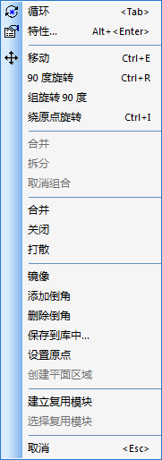
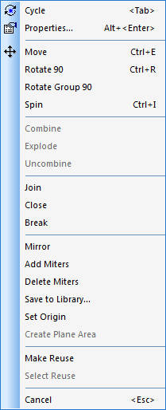

20160408
绘图工具栏(Drafting Toolbar)
文本(Text)
cmd : x # 转变为显示文本外框模式
注意这只是显示文本的使用范围外框,只能在设计中看到,实际输出Gerber、PDF或打印时是没有这个外框的
如文本需要中文字,则需要设定编码及字体
编码设置
Tools / Options / 全局(Global) / 常规(General) / 文本译码(Text encoding) / Chinese Simplified /
字体设置
Tools / Options / 绘图(Drafting) / 文本和线(Text And Lines) / 默认字体(Default font) / 文本字体(Text) : 选择"宋体"或是其他中文字体 /
2D Line
> Drafting Toolbar / 2D Line / Right Menu /
Drafting 2D Line Right Menu
")
")
Select 2D Line / 右键
")
")
选择2D线形状(Select 2D Line Shape) / 右键


2D Line的结合(Join)
如有两条2D线,移动其中一条2D线 / 右键 / 捕获至对象(Snap to Object) /
/ 当和另一条2D线交叠时看到一个小方形,这便是另一条线的终点(End Point) /
/ 点击或空格键放下 / 这样便能确保两条不同2D线的终点交叠在一起 / 选择这两条2D线 / 右键 / 结合(Join) / 这样便能把不同的线段合并为同一线段
2D Line的封闭(Close)
鼠标已为"2D Line"模式,当将鼠标移动到另一条2D线交叠时看到一个小方形,这便是另一条线的终点(End Point) / 注意 : 这必须要启用"捕获至对象(Snap to Object)"才能看到方形
右键 / 封闭(Close)
使用打散(Break)后,多边形或多节段2D线会打散成多条一节段的2D线
2D Line 绘图特性(Drafting Properties)


样式(Style) :
---- 实线(Solid)
---- 短划线(Dash)
---- 点(Dot)
---- 点划线(Dash dot)
---- 双点划线(Dash double-dot)